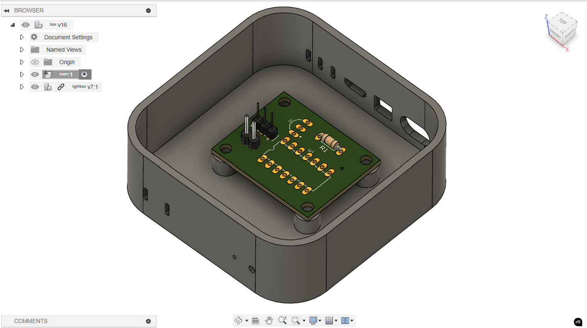

soph week 1/13 - 1/17
finally figured out how all the bugs work, and fixed them.
another week of the lightbox project, where i spent monday finalizing my code, before working purely on my box design.
box design
i started this week by restarting my entire box, as i previously didn’t have my box cenetered around the origin, and i was building it on the wrong axis. additionally, the dimensions were all messed up, as i was using a wrong scale. upon fixing all my mistakes, i started adding in all of the different type of connection ports on the mac mini. these ports won’t have any functionality besides one, which will be used for powering the lightbox.
after finishing, i decided to consult my friend jonas for some help with creating standoffs, which will be used to mount my pcb on my box.
on my previous blog posts, i mentioned how i wanted to somehow make the acrylic design as a face of the box. however, there would be lots of problems revolving around orienting the neopixel in the way where it could stay secure, and still be able directly below the acrylic piece. therefore, unless i find a new solution, i will be moving forward from this idea, and use the top face to hold my acrylic piece.
code + bug fixes
i decided to finally take a close look into my code to figure out some of my bugs, and i found them
#include
#include
#include
#define one_wire_bus 2
#define led_pin 10
#define numpixels 8
OneWire oneWire(one_wire_bus);
DallasTemperature sensor (&oneWire);
WS2812 LED(nnumpixels);
cRGB value;
#define freezing 0
#define cold 1
#define warm 2
#define warmer 3
#define burning 4
void setup() {
LED.setOutput(led_pin);
// Serial.begin(9600) will break the burnloader when uncommented
sensor.begin();
}
int get_temp() {
sensor.requestTemperatures();
float c = sensor.getTempCByIndex(0);
float f = c * 9 / 5 + 32;
return f;
}
int get_temp_range(float_temp) {
if (temp <=20) return freezing;
if (temp > 20 && temp <= 40) return cold;
if (temp > 40 && temp <= 60) return warm;
if (temp > 60 && temp <= 80) return warmer;
return burning;
}
for some reason software serial didn't work. i tried okay.
previously, i stated how my temperature sensor was floating, yet worked one time upon changing the led_pin to 10.
this wasn’t the problem, but rather me messing things up.
i accidently swapped onewire with the led_pin, causing my neopixel to be connected to my onewire, and my led_pin to be connected to my temperature sensor.
eventually, i got it fixed, and was able to troubleshoot my code properly, which ended up working as i expected.
the second bug i fixed was the bug with attiny’s randomly not responding.
the problem this time was that since the attiny doesn’t have serial support, and software serial wasn’t working for me, i kept relying on the metro mini to use the serial, to debug my code. in doing so, i probably ended up corrupting the bootloader of the attiny84’s, which caused them to not respond.
thankfully, this was an easy, but tedious fix, as i would have to swap both the metro mini and the attiny. fortunately, no permanent was done to either the attiny84, or the metro mini (assuming you don’t use both of them together), so they will be able to be reused for future projects.